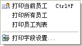
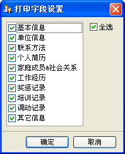

| 档案操作 - 打印 |
|
秋风人事档案管理系统支持几种方式的打印：您可以打印当前员工信息卡片、所有员工信息卡片及员工信息列表，其功能菜单如下图示：  这里的打印功能，仅当系统中有员工信息时才会有用，它在工具栏中也有对应的菜单，在员工信息列表的弹出菜单中也有[打印当前员工]之功能，下面分别描述一下其中功能： 打印当前员工：以卡片形式打印当前员工。 打印所有员工：以卡片形式打印当前列表中的所有员工。 打印员工列表：以列表形式打印当前的员工列表。 打印字段设置：设置打印的字段显示。此功能只对[打印当前员工]、[打印所有员工]有效 ；而对于[打印员工列表]，它是依据列表所设置的显示字段来打印的。  当执行打印操作时，系统默认先调用打印预览，然后您可操作进行打印。若您想直接打印，可在[系统]->[选项]的基本参数中勾选[直接打印数据]，则您执行打印操作时，系统就会直接把数据送与打印机进行打印了。 |